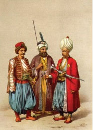

Eski İstanbul kahvehaneleri arasında dikkate değer olanları, ocaklarının kaldırılmasına kadar İstanbul’da pek gürültülü bir hayata sahne olmuş bulunan yeniçeri kahvehaneleridir. Kahvehanelerin kapısı üzerine mensup oldukları yeniçeri ortasının nişanını asmağa başlamışlardı. Her ortanın yoldaşları da kendi nişanlarını taşıyan kahvehanelere çıkar olmuşlardı.
IV. Mustafa döneminin bir vakanüvisi yeniçeri kahvelerini şöyle tarif etmektedir:
“Yeniçeri kahveleri baldırı çıplak külhanilerin sabahtan akşama kadar saz ve sözle zevk ve sefa sürdükleri, afyon ve esrar ile keyif çatıp eğlendikleri yerlerdi. Hemen hepsi gayet büyük ve fevkalâde süslü olan bu kahvehaneler, genellikle İstanbul’un manzarası en güzel yerlerine, bilhassa denize nazır sur bedenleri üstüne yapılır veya deniz üstüne kazıklarla atılmış salaşlarda kurulurdu. Her kahvehanenin mahbup köçekleri, sazendeleri, kıssahanları[20], eli ayağı düzgün, tüysüz uşakları bulunurdu.
Peykeler kilim ve seccadeler, kuzu pöstekileri ile döşenir, duvarlara Bektaşi levhaları asılır, yerlere fırdolayı hasır döşenirdi. Tavandan peykelerin hizasına kadar inen camların önü çiçek saksıları, bilhassa fesleğenlerle donatılırdı. Kahvehanenin ortasında daima, etrafı saksılarla süslü bir havuz ve fıskiye bulunurdu. Kahve ocakları ise bir gelin köşesi gibi süslenirdi. Kapaklı ve açık boy boy cezveler, dolap dolap fincanlar, en az birkaç tanesi gümüş ve altın başlıklı, billûr şişeli olmak üzere nargileler, kehribar ağızlıklı çubuklar, çiçekli oymalı levhalar bir servet değerinde olurdu. Ocak başında da, genellikle kahvehane sahibinin evlât niyetine büyüttüğü bir delikanlı bulunurdu.
Her yeniçeri kahvehane yaptırıp açamazdı, kahvehane sahiplerinin hemen hepsi en namlı yeniçeri zorbaları idi. Ocağın son yıllarında kahvehane sahibi olan yeniçeri zorbalarının en namlıları Kuledibi kahvehanesinin sahibi Kalyoncu Burunsuz Mustafa, Hendek kahvehanesinin sahibi Tersane Başçavuşu Darıcalı İbrahim Çavuş, Çardak iskelesi kahvehanesinin sahibi 56’lı yoldaşlarından Galatalı Hüseyin Ağa, Togyar Tepesi kahvehanesinin sahibi Tiflisli Ali, Balaban İskelesi kahvehanesinin sahibi Kız Mustafa, Esir Pazarı kahvehanesinin sahibi Babadağlı Hasan ve Irgat Pazarı kahvehanesinin sahibi Turnacı Ömer idi.
Yeni yapılan bir yeniçeri kahvehanesi döşenip dayandıktan sonra, kapısının üstüne asılacak olan orta nişanı için parlak bir alay düzenlenerek açılırdı. Orta nişanı genelde şimşir, nadiren de abanoz üzerine kabartma olarak işlenir, uygun boyalarla boyanır ve tezhip edilirdi. Kahvehanelerin nişan alayı Süleymaniye’deki Ağa Kapısı’ndan başlardı. Nişan levhasını Baş Karakullukçu başının üstünde tutardı. Kırk, elli ve hatta daha fazla sayıda delikanlı altın ve gümüş kınlı hançerler, Keşmir şalları, Cezayir kesimi esvaplarıyla levhanın önü ve ardı sıra yürürlerdi.
Alayın en önünde de elleri baltalı Bektaşi babaları bulunurdu. Soytarılar, çengiler, köçekler her türlü maskaralık yapıp oyun oynarlar, atlı alay çavuşları, nişanın geçeceği yollardaki halkı kırbaç ve kamçı ile dağıtarak: “Savulun bre savulun... Nişan geliyor!” diye bağırırlardı.

Yeniçeriler
Yeni bir kahvehane açan bir yeniçeri ağası kahvehanesini kesesinden neredeyse metelik harcamadan dayar döşerdi. O semtin Müslim ve gayrimüslim, zengin ve hallice, ne kadar tanınmış siması varsa adlarını bir deftere yazar ve her adın yanına dilediği eşyayı kaydederdi. Sonra da adamlarından gözü pek, zıpırlığı, itliği ile tanınmış birisine bu defteri verir ve adları kayıtlı olanlara gönderirdi; bu serseri de: “Ağam selam ediyor, defter gönderdi, kahvehane hediyesini bekler!” diyerek kesilen haracı tebliğ ederdi. Bu tebliği alanlar da, hiç tereddüt etmeden hediyesini gönderir, hatta bazen de korkusundan bizzat götürürdü. Hele götürmesin! Ne mahallesinde evinde, ne de dükkânında, işinde gücünde rahat yüzü göremez, türlü saldırılara uğrar ve hatta öldürülebilirdi. Yeni açılan bir yeniçeri kahvesine, yeniçeriler kendi aralarındaki en makbul hediye olan kanarya kuşu götürürdü. Kanarya kahvehane için bir uğur, maskot sayılırdı. Büyük bir yeniçeri kahvehanesinde en az 30-40 kanarya kafesi bulunurdu.”